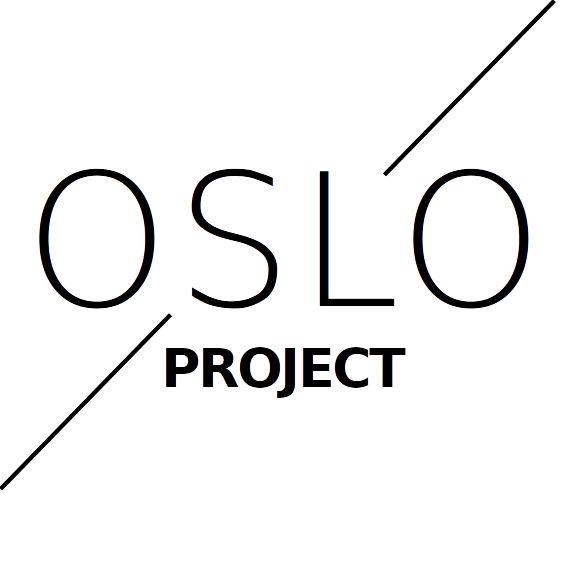

Welcome to the Oslo Project
 This is our homepage, as you can see there is a lot todo, first we will rework this page. So if you are thinking this is way to ugly, please do not leave ^^Anyways if you want to know why we started all of this, you can read the introduction page.
Why Oslo
Oslo stands for:Open-Source smartphone Linux-based ooperating system
Project Status and Timeline
- ̣[x] Brainstorming Phase
- [ ] Planning Phase
- [ ] Implementation Phase
- [ ] Alpha Phase
- [ ] Planning II Phase
- [ ] Beta Phase
- [ ] Pre-Release Phase
- [ ] 1.0 Done
Can I help
Yes! please!This project is far to big to be done alone. The more people we are the better the result will be. So if you are interessted in a free (as in both, freedom and free beer), open-source operating system for a mobile device which will respect you and your privacy, feel free to help us! We need basically help with everything, but a short overview of stuff that is required the most:
- Linux Kernel Experts
- Hardware Ninjas
- Design/Creative Gurus
- Other Hackers
Usefull links
> Manifest> Timeline
> GitHub